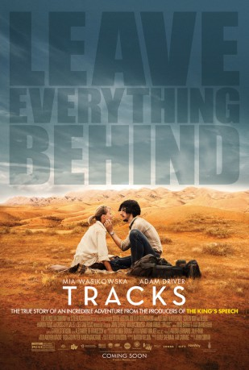
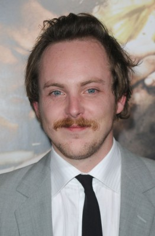

#2187 Spuren - Lass alles hinter dir
 
 IMDB-Wertung: 7.2 / 10
IMDB-Wertung: 7.2 / 10  Metascore: 78
Metascore: 78 
A young woman goes on a 1,700-mile trek across the deserts of West Australia with four camels and her faithful dog.
Jahr: 2013
Dauer: 112 Minuten
FSK: 6
Land: Australien Studio: Ascot Elite Entertainment GroupTonspuren: DTS - ,
Untertitel:
Auflösung: 1080p (1920x808) Größe: 8232 MB
Genre: Drama, Abenteuer, Biographie
Regisseur: John Curran
Drehbuch: Marion Nelson, Robyn Davidson
Soundtrack: Garth Stevenson
Darsteller:
- Lily Pearl als Young Robyn
 Mia Wasikowska als Robyn
Mia Wasikowska als Robyn Rainer Bock als Kurt
Rainer Bock als Kurt- Jessica Tovey als Jenny
- Melanie Zanetti als Annie
 Adam Driver als Rick
Adam Driver als Rick- Emma Booth als Marg
- Robert Coleby als Pop
- Philip Dodd als Publican
- Fiona Press als Publican's Wife
- Daisy Walkabout als Ada
- Felicity Steel als Gladdy
- John Flaus als Sallay
- Ian Conway als Chilpi
- Evan Casey als Evan
- David Pearce als David
- Darcy Crouch als Tolly
- Brendan MacLean als Peter
- Jamie Timony als Bernard
- Ryan McMillan als Bob
- Leah Michelle als Niece
- Steven Parker als Pete
- Leo Payten als Young Boy
- Jed Payten als Young Boy
- Bryan Probets als Geoff
- Elsie Wanatjura als Dancing Woman
- Rene Kulitja als Dancing Woman
- Happy Reid als Dancing Woman
- Lydia Angus als Dancing Woman
- Yvonne Yiparti als Singing Woman
- Awalari Teamay als Singing Woman
- Edith Richards als Singing Woman
- Vincent Forster als Vincent
- Rolley Mintuma als Mr. Eddy
- Tim Rogers als Glendle
- Chelsea Haywood als Tourist One
- Andrew Harper als Tourist Two
-  Tom Budge als Suzuki Man
- Edwin Hodgeman als Mr. Ward
- Carol Burns als Mrs. Ward
- Chris Duncan als TV Reporter
- Ricardo Anasco als TV Reporter
- Morgan als Dookie
- Mona als Zelly
- Istan als Bub
- Mindie als Goliath
- Special Agent Gibbs als Diggity
- Mitch als Goldie
Datei: X:\2013(N-Z)\Spuren - Lass alles hinter dir (2013, FSK6, 1920x808).mkv seit 19.10.2015
Festplatte: HD 2013(I-Z)-2014(A-Z)
 Es gibt insgesamt 133 Filme in der Gruppe '2013(N-Z)'
Es gibt insgesamt 133 Filme in der Gruppe '2013(N-Z)'